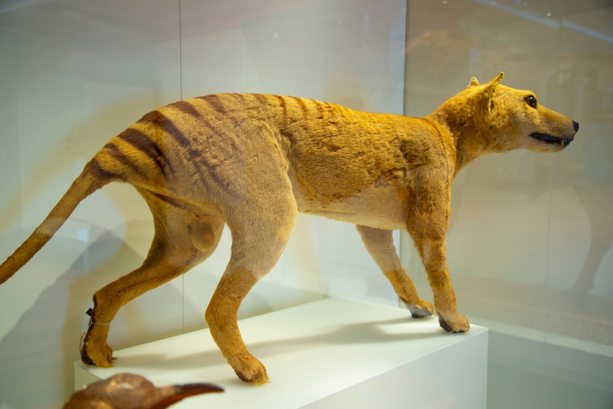
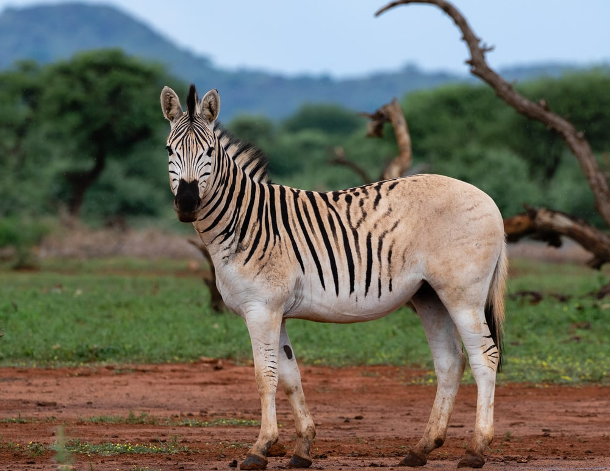
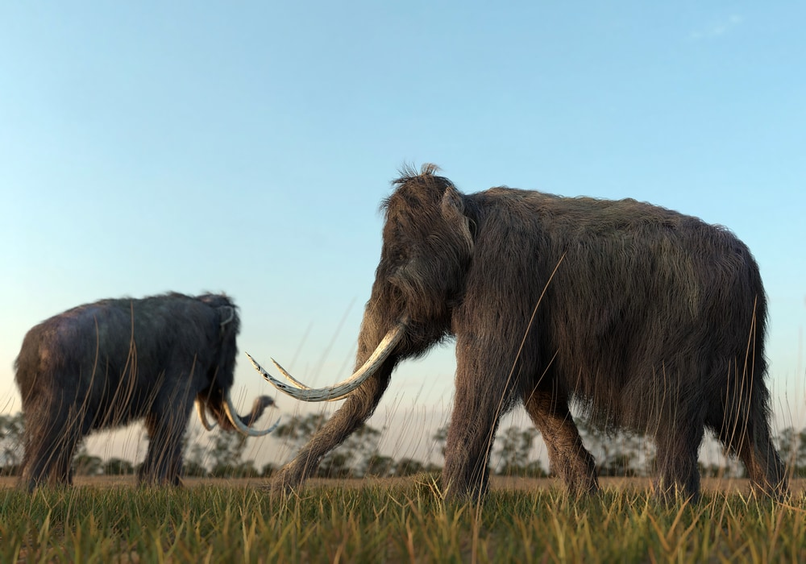
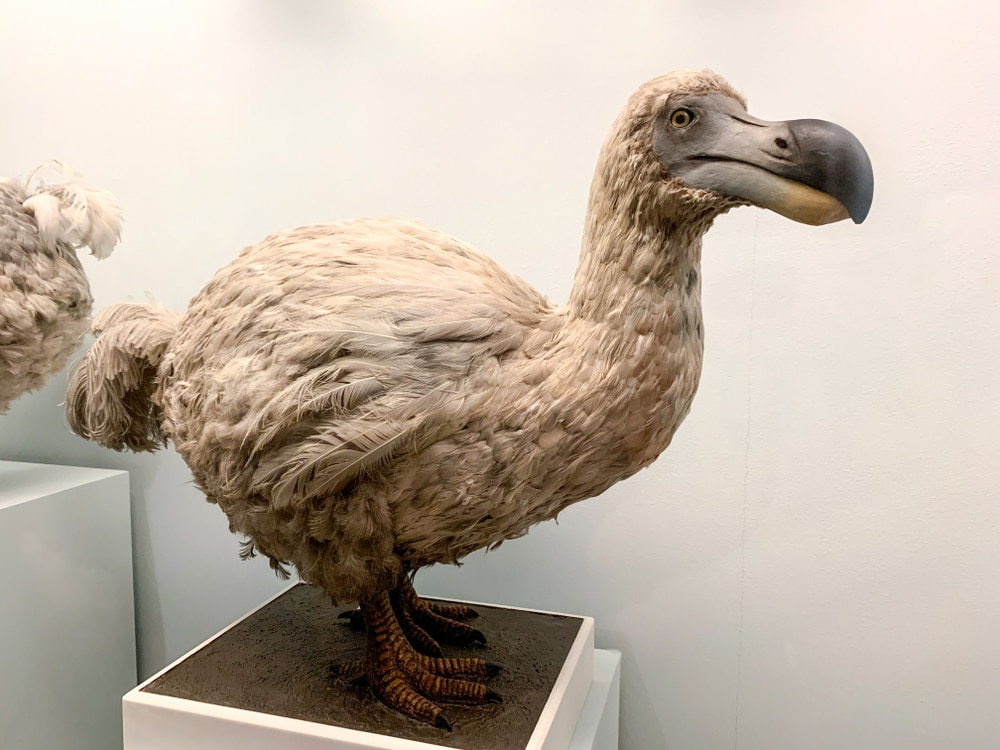
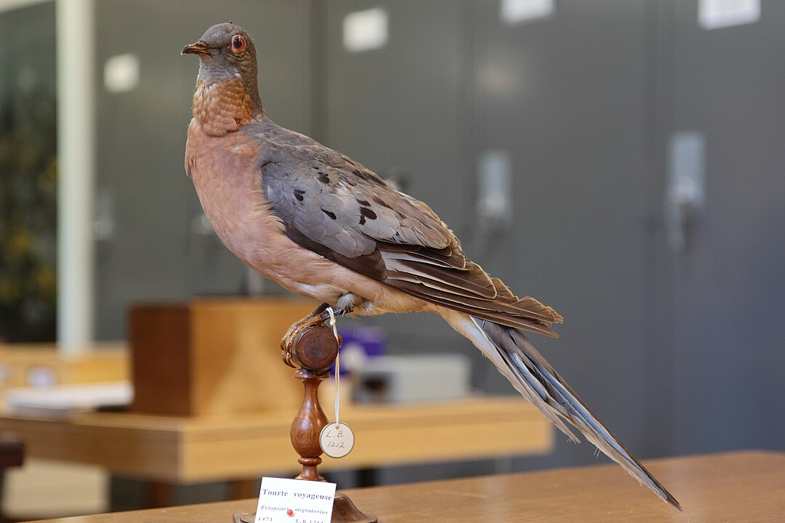
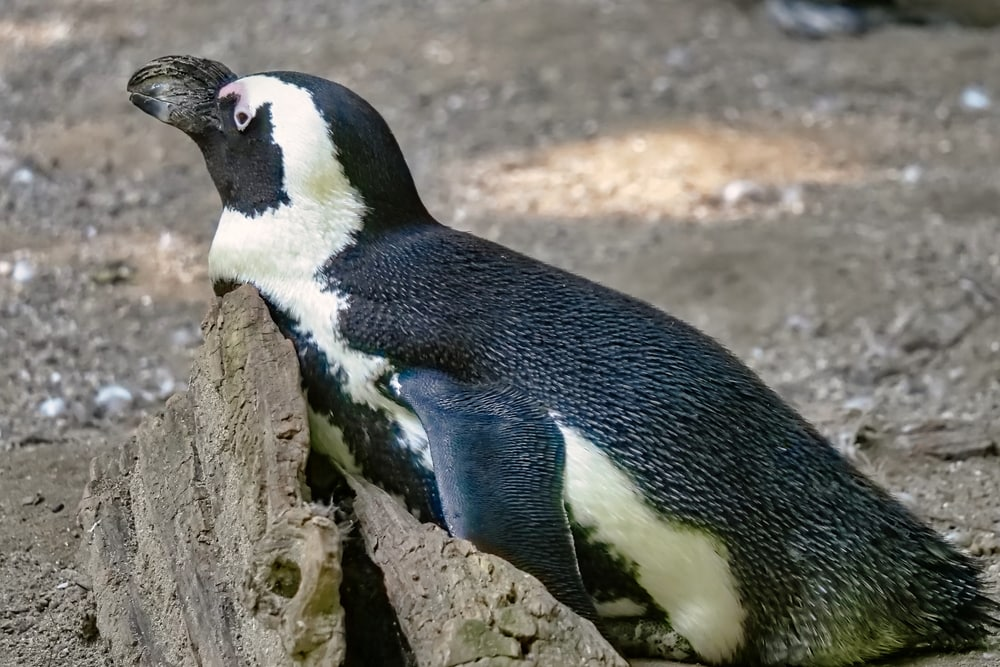
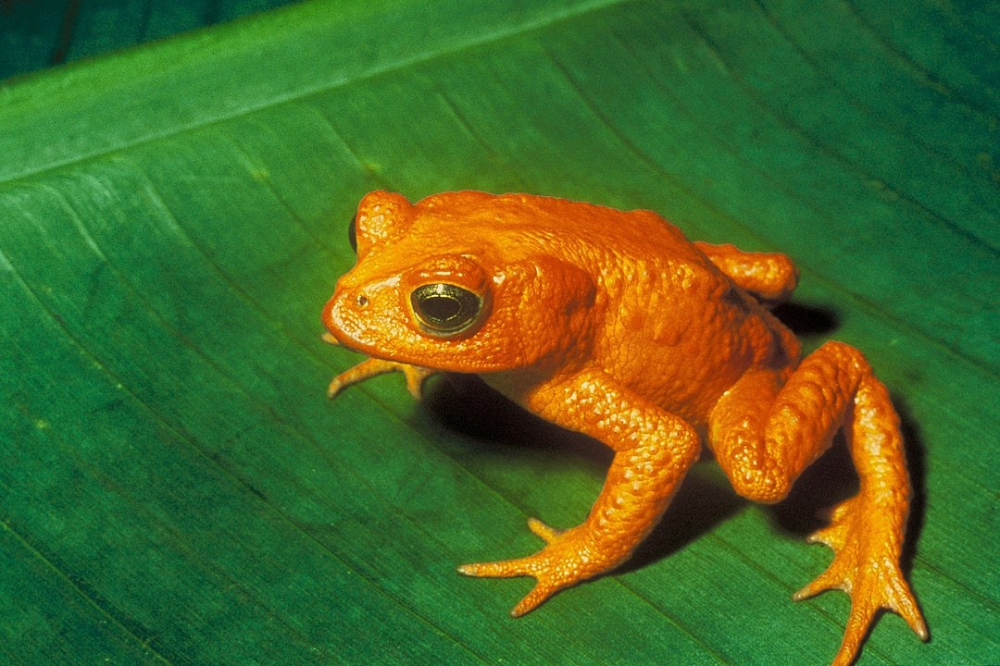
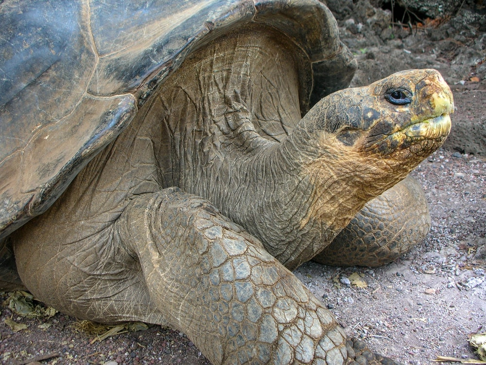
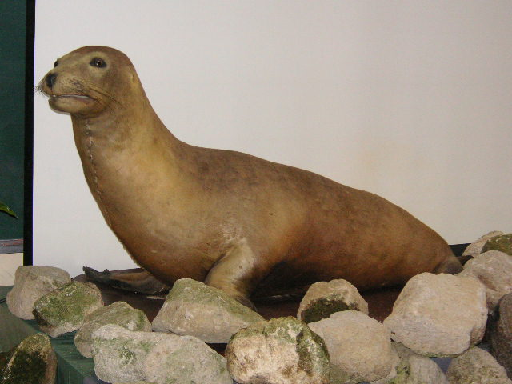

Terrestrial Extinct Animals
Tasmanian Tiger
The Tasmanian tiger, also known as the thylacine, was a type of marsupial that once lived in Australia, Tasmania, and Papua New Guinea. The species went extinct on the mainland of Australia about 2,000 years ago, but populations still existed in Tasmania. The Tasmanian tiger population began to decline drastically during the 19th century. As settlers came into their range, the clearing of land for agriculture and livestock took away much of their habitat.
Quaga
Quaggas were a subspecies of the Burchell’s zebra. The two species have many similarities, except for the striping pattern. The quagga once lived throughout the southern portion of Africa in grassland habitats.The population of quaggas largely went unmonitored, so their extinction wasn’t apparent until after they died out. The main reason the quagga went extinct was excessive hunting.
Wooly Mammoth
One of the best-known ice age animals, the woolly mammoth, has long been extinct. There are a few theories as to why woolly mammoths went extinct, but they’re still largely debated. Some scientists attribute their extinction to climate change and overhunting. Woolly mammoths once roamed Europe and North America until about 4,000 years ago. Their populations became more isolated around 10,000 years ago. At that time, most occurred in Siberia and Alaska.
Aerial Extinct Animals
Dodo
Another Ice Age animal is the dodo bird. Dodos are often depicted as clumsy birds. The dodo got this reputation from the writings of sailors that visited the island of Mauritius in the Indian Ocean, where they were discovered.The first records of dodo birds date back to the 16th century. What we know about the appearance of dodo birds today also comes from the writings of sailors who observed these birds while on the island.
Passenger Pigeon
At one point in time, passenger pigeons were one of the most abundant birds in North America. It’s estimated that between 3 and 5 billion individuals existed around the time of European colonization of North America.Passenger pigeons were often referenced in the writings of early settlers and explorers, including French explorer Samuel de Champlain. Their range extended from southeastern Canada south to the Gulf Coast states of the US.
Great Auk
The Great Auk was a large, flightless bird that resembled modern-day penguins. With a height of approximately 30-33 in (75-85 cm), these birds were quite sizable. Despite physical similarities to penguins, the Great Auk isn’t closely related to them, representing parallel evolution.Their black and white plumage, similar to penguins, allowed them to be excellent swimmers. They had short wings adapted for swimming underwater while hunting for fish and crustaceans.
Amphibian Extinct Animals
Golden Toad
Golden toads once lived in a high-elevation habitat called the Monteverde Cloud Forest Reserve in northern Costa Rica. Males were bright orange. Females were black with red blotches and a bright yellow border.The IUCN officially declared golden toads extinct in 2004. They were mainly threatened by climate change, airborne pollution, and a fungal disease that infects amphibians called chytridiomycosis.
Pinta Giant Tortoise
The Pinta Island giant tortoise went extinct in 2012 after the last of its kind, Lonesome George, was found dead. Pinta Island giant tortoises were one of several subspecies of giant tortoises.Pinta Island giant tortoises faced major threats of overexploitation in the 19th century. By the 20th century, their population had been significantly reduced to the point that they were thought to be extinct.Pinta Island giant tortoises lived in the northern region of the Galápagos Archipelago.
Japanese Sea Lion
The Japanese sea lion was a type of eared sea lion that lived in waters surrounding Japan and South Korea. Its historic range extended from the southern end of Japan as far north as the seas surrounding Sakhalin Island, Russia. Japanese sea lions were previously thought to be a subspecies of the California sea lion. However, further studies revealed it was a distinct species.In the 1800s, the Japanese sea lion population was estimated to be up to 50,000 individuals.
Endangered Species
Species on the Brink of Extinction
- Pika
- Giant Otter
- Black-Footed Ferret
- Darwin's Fox
- White-Rumped Vulture
How to protect Endangered Species from Extinction
- Buy products from sustainable sources
- Advocate for conservation
- Avoid plastic use and littering, and recycle properly
- Learn more about wildlife and educate others
- Support conservation organizations
- Support policy initiatives that help animals
- Protect wildlife habitats
- Participate in park, roadside, or beach cleanups
- Host a community fundraising event
- Volunteer with an animal shelter or sanctuary that rehabilitates wildlife
- Use alternatives to pesticides
- Travel sustainably and support wildlife-friendly tourism
- Follow vessel speed rules on the ocean
- Support habitat connectivity
- Make your home wildlife-friendly
- Visit a national park